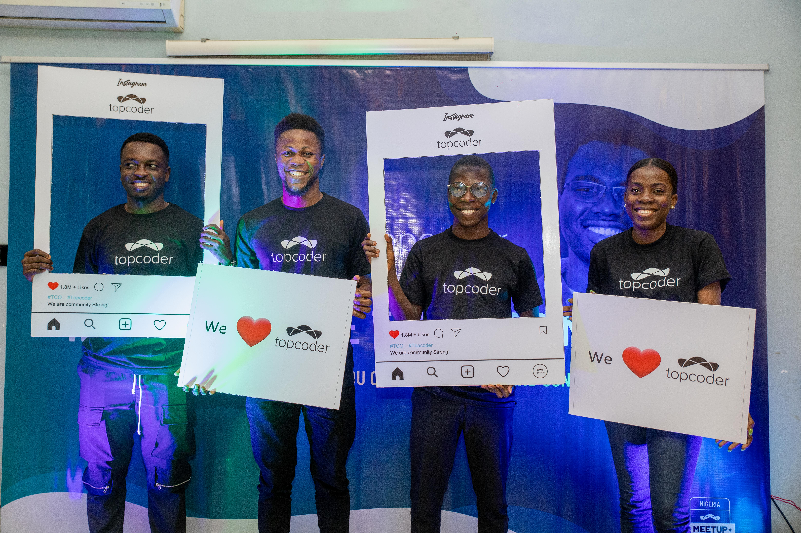
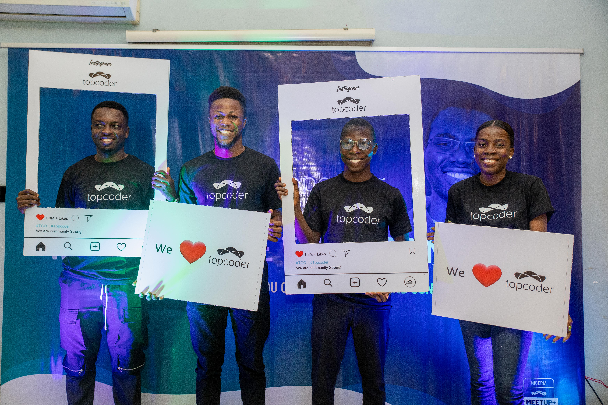

Creators, Innovators, and Leaders
Welcome to Social Media Week Lagos 2024!
We are thrilled to have you join us for this year’s Social Media Week Lagos, where Africa’s brightest digital minds and creative voices come together to redefine the power of social media and technology.
Social Media Week Lagos delves into the trends, challenges, and innovations shaping how we communicate, connect, and influence across Africa and the world. Our sessions, panels, and workshops are crafted to equip you with cutting-edge insights and practical tools for impactful storytelling, strategic brand growth, and digital excellence.
Prepare for an unforgettable journey of discovery, connection, and growth. Let’s shape the future of social media together!

 
